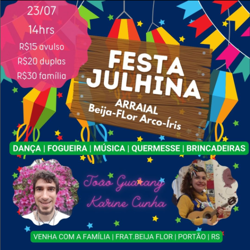

Destaque da semana

Próximos eventos
-

CURSO REIKI – SHODEN – Nível I “ O Despertar” Crissie Rosa TR3292019RS
-

Festa Julhina Arraial Beija-Flor Arco-Íris Dia 23/07 - Sábado Apartir das 14hrs
-

Se você passa por algum tipo de situação conflituosa venha conhecer e se beneficiar desta técnica maravilhosa que é a Constelação Familiar Sistêmica .
Sobre
Quem somos
Fraternidade Beija-Flor Irmandade e fraternidade Boas Vindas! Estudo Integral da Vida à Serviço do Amor Cursos, Vivências & Retiros Medicinas Holísticas e da Floresta Práticas Integrativas Xamanismo